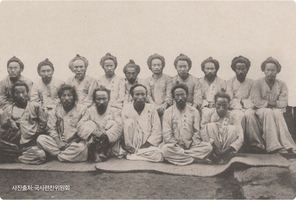
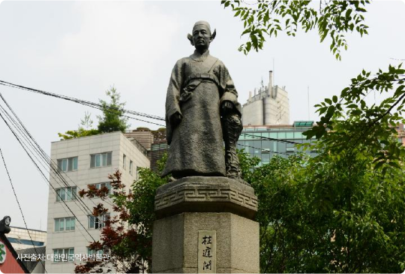
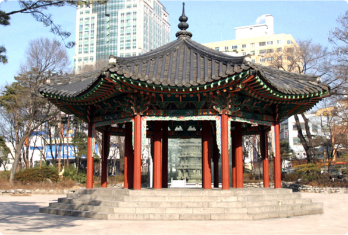
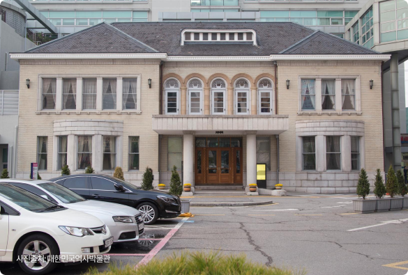
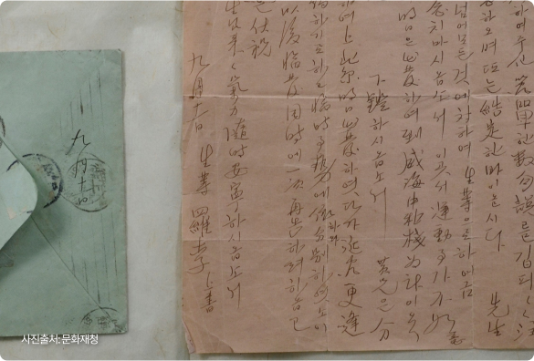
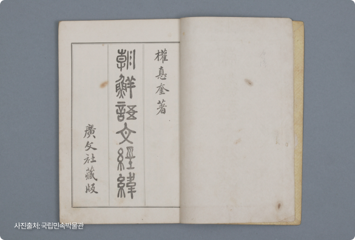
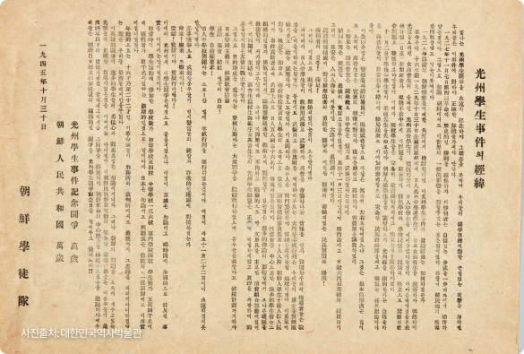
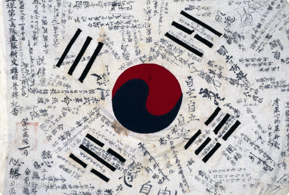

서울시 마포대로 49 성우빌딩 1202호
Tel 02.704.2311~3 Fax 02.704.2377
Copyright(c) 2018 The Federation of Korea Culture Center.
All rights reserved
과거 우리나라는 한일병합조약에 의해 일본에 나라를 강제로 빼앗겼다. 일본 제국주의에 나라를 빼앗긴 우리나라 사람들은
나라를 되찾기 위해 여러 방면으로 힘썼다. 이에 따라 독립운동은 1910년대부터 본격적으로 시작되어, 1945년 우리나라를
되찾을 때까지 활발하게 이루어졌다. 우리 민족의 발자취와 독립운동에 참여한 사람들의 이야기를 소개한다.

독립운동은 한 순간에 시작되지 않았다. 우리나라의 독립을 바라는 민중의 마음과 행동이 일제를 향한 처절한 저항으로 나타났다. 우리는 그들의 발자취를 통해 격렬했던 독립운동의 흐름을 확인할 수 있다. 독립을 향한 뜨거운 민족의 열망을 독립운동사를 통해 확인해보자.
관련 콘텐츠

관련 콘텐츠

관련 콘텐츠

관련 콘텐츠

관련 콘텐츠

관련 콘텐츠

관련 콘텐츠

관련 콘텐츠


우리 민족이 독립을 염원한 수십년의 세월동안 우리나라의 독립과 해방을 위해 힘써온 사람들이 있다.
우리는 그들을 자랑스러운 ‘우리의 독립운동가’라고 부른다.
어록 출처 : 국가보훈처
보다 강력한 항일전을 수행하기 위해 광복군을 결성해야 한다.
｜이동녕｜
싸우다 싸우다 힘이 부족할 때는 이 넓은 만주 벌판을 베개 삼아 죽을 것을 맹세합니다.
｜지청천｜
"
러시아 추위보다 나라를 잃은
나의 심장이 더 차갑다.
｜최재형｜
조선 독립을 일본 사람도 자기 일같이 생각하여 주기를 바란다.
｜이동휘｜
대한독립의 소리가 천국에 들려오면 나는 마땅히 춤추며 만세를 부를 것이다.
｜안중근｜
우리나라의 독립운동은 누가 했을까?
독립운동은 우리나라의 독립을 염원하는 사람이라면 누구나 가능했다. 성별도 국적도 상관 없었다.
우리는 그들을 독립유공자라 칭하며, 그들을 기리고 있다. 독립유공자는 2022년 기준 17,285명이며,
그들 중 독립운동인명사전에 소개된 15,178명의 독립운동 계열과 본적을 통해 그들이 지나온 길을 알아보자.
자료 출처: 독립기념관 한국독립운동사연구소 『한국독립운동인명사전』
이 독립운동가를 아시나요?
독립운동은 특별한 사람에게만 주어진 사명이 아니었다. 민족의 독립을 염원하는 사람이라면 누구나, 어디서든 독립을 위한 목소리를 낼 수 있었다.
그러나 각자의 사정으로 그들의 이야기는 널리 퍼지지 못했다. 지역N문화에서는 각 지역별로 많이 알려지지 못한 독립운동가의 이야기를 소개한다.
그와 더불어 뛰어난 활약을 했음에도 공적인 영역에 기록되지 못하고 잊혀진 ‘여성독립운동가’의 이야기도 함께 담았다.
박순구(朴順九)
1888-11-06 ~ 미상
12인의 장총단
박종성(朴鍾聲)
1883-10-05 ~ 1940-06-05
조철호(趙喆鎬)
1890-02-15 ~ 1941-03-22
12인의 장총단
송재필(宋在弼)
1921-10-31 ~ 1968-09-20
박순구(朴順九)
· 인제 가리산에 본거지를 두고 6년간 19차례에 걸쳐 경찰관주재소 습격
· 1924년 부호층으로부터 군자금을 모금, 징수
박순구는 1888년 11월 6일 강원도 춘천군 북산면 물노리에서 태어났다. 그는 마도현의 친족으로, 1907년 자신의 부친 박영관이 마도현의 부친 마정삼과 함께 의병 활동을 벌이다가 일본군에게 체포된 뒤 살해되자 복수를 결심하고 1921년 9월 마도현, 마만봉 등과 함께 장총단(長銃團)을 조직했다. 그는 화승총을 휴대하고 마씨 형제들과 함께 강원도 홍천군 두촌면 자은리에 소재한 경찰관 주재소의 경찰관을 향해 발포하였으나 사살에 실패했다.